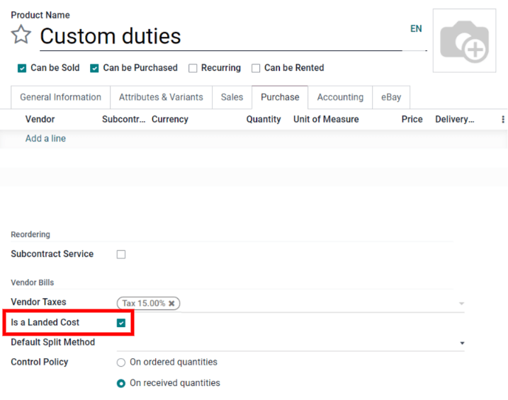
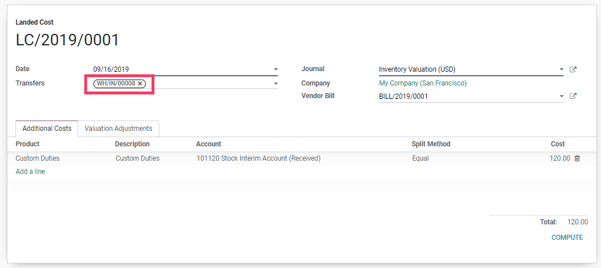

Integrar costos adicionales con productos (costos en destino)¶
La función «costos en destino» de Odoo le permite incluir costos adicionales (envío, seguro, derechos aduanales, etc.) en el costo del producto.
Configuración¶
Primero, vaya a y active la función costos en destino. Odoo también le da la opción de establecer un diario predeterminado en el cual se registrarán los asientos contables de costos en destino.

Agregar costos a productos¶
Recibir la factura de proveedor¶
Después de que un proveedor completa una orden de compra y le envía la factura, haga clic en crear factura en la orden de compra para crear una factura de proveedor en Odoo. Si la factura de proveedor incluye costos en destino, como derechos aduanales, seleccione la casilla en la columna costos en destino en la factura de proveedor.

En el caso de los cargos que siempre son costos en destino, debe crear un producto de costo en destino en Odoo. De esta forma, el producto de costo en destino se puede agregar con rapidez a la factura de proveedor como una línea en la factura en lugar de tener que ingresar la información de costo en destino cada vez que recibe una factura de proveedor.
Primero, cree un nuevo producto en . A continuación escriba el nombre del costo en destino. Después, establezca el tipo de producto como servicio. Los productos de costo en destino siempre deben ser de este tipo. Posteriormente, vaya a la pestaña compra y seleccione la casilla junto a es un costo en destino. Por último, haga clic en guardar para terminar de crear el producto de costo en destino.
Si este producto siempre es un costo en destino, también puede definirlo en el producto y evitar tener que seleccionar la casilla en cada factura de proveedor.
Después de que agregue el costo en destino a la factura de proveedor (ya sea al seleccionar la opción Costo en destino en la línea de la factura o al agregar un producto de costo en destino en la factura) haga clic en el botón Crear costos en destino ubicado en la parte superior de la factura. De forma automática Odoo crea el registro correspondiente con el costo en destino precompletado en las líneas de costos adicionales del producto. Elija a qué recolección se deben aplicar los costos adicionales, haga clic en Editar y seleccione el número de referencia de la recolección en el menú desplegable Traslados. Por último, haga clic en Guardar.
Después de establecer la recolección, haga clic en calcular en el registro del costo en destino. Después vaya a la pestaña ajustes de valoración para ver el impacto de los costos en destino. Por último, haga clic en validar para registrar el asiento de los costos en destino en el diario contable.
El usuario puede acceder al asiento creado por el costo en destino si hace clic en el asiento contable.
Nota
La categoría del producto al que se aplica el costo en destino se debe configurar con los métodos PEPS o costo promedio.
Nota
Los registros de costos en destino también se pueden crear directamente en . No es necesario crearlos desde la factura de proveedor.